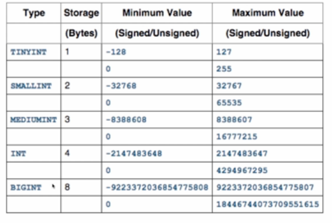

数据库性能调优
数据库调优，就好比盖楼打地基，地基打得不稳，楼层一高，就会塌方。数据库也是如此，数据少，并发小，隐藏的问题是发现不了的，只要达到一定规模后，所有的问题就会全部曝露出来了，所以前期的设计阶段尤为重要。
数据库优化分类
- 硬件
- 网络
- 软件
硬件、网络取决于公司的经济实力。
软件再分为表设计(字段类型、存储引擎)、SQl语句与索引、配置文件参数、体系架构等方面的优化。
表设计优化
一个好的数据库设计对于数据库的性能优化常常会起到事半功倍的效果。合理的数据库结构不仅可以使数据库占用更小的磁盘空间，而且能够使查询速度更快。
表优化的常用方法
- 将字段很多的表分解成多个表
对于字段较多的表，如果有些字段的使用频率很低，可以将这些字段分离出来形成新表。因为当一个表的数据量很大的时候，会由于使用频率低的字段的存在而变慢。
- 增加冗余字段
设计数据库表时应尽量遵守范式理论的约定，尽可能减少冗余字段。但是合理地加入冗余字段也可以提高查询速度。这就是以空间换时间。
总结：在开发应用程序时，设计的数据库要最大程度地遵守三范式。但是，三范式最大的问题在于通常需要join很多表，而这个会导致查询效率很低。所以有时候基于性能考虑，我们需要有意违反三范式，适度的冗余，以达到提高查询效率的目的。
字段类型的选取
原则：选择字段的一般原则是保小不保大，能用占用字节少的字段就不用大字段。
- 数字类型

tinyint类型最大存储是255。
create table tmp(id tinyint);
insert into tmp(id) values(256);//溢出
- int(11) vs int(21) 存储空间还是存储范围有区别？ int(11)与int(21)的存储空间与存储范围是一样的。
区别是：如果你选择是int(11)，那么你存放了一个1，那么结果是1前面有10个0，int(21)前面有20个零
实验：
create table t(a int(11) zerofill,b int(21) zerofill);//zerofill 是补全零的
insert into t values(1,1);
select * from t;
+-------------+-----------------------+
| a | b |
+-------------+-----------------------+
| 00000000001 | 000000000000000000001 |
+-------------+-----------------------+
1 row in set (0.00 sec)
字符串类型 * char
char存储定长，容易造成空间的浪费。char数据类型存储大小最大为255字符。
最大255个字符的意思是最大只能存放255个字母或者255个汉子
-
varchar
varchar存储变长，节省存储空间,varchar需要一位来存储长度。varchar是使用多少，就使用多少空间。所以通常都是选择varchar。
varchar数据类型可以存储超过255个字符
注意：char和varchar存储单位为字符。字符与字节需要换算。
实验： //char最大长度255字符，所以报错 mysql> create table c(a char(256));
ERROR 1074 (42000): Column length too big for column 'a' (max = 255); use BLOB or TEXT instead //varchar存储长度可以超过255 create table c(a varchar(256)); Query OK, 0 rows affected (0.16 sec) -
字符与字节的关系
如果是utf8字符集，因为utf8存放中文占用三个字节大小，所以存放两个中文需要6个字节大小。
一个英语字母无论什么情况下都是占用一个字节的，所以varchar(6)就可以存放github这个英语单词了
-
date
date三个字节，如2015-05-01只能存储到天数。date精确到年月日
-
time
time三个字节,只能存小时分钟，time精确到小时分钟秒
-
datetime
datetime八字节，可以存储年月日时分秒
-
timestamp
timestamp四字节，可以存储年月日时分秒。
字符串类型总结
- char与varchar定义的长度是字符长度不是字节长度
- 存储字符串推荐选择使用varchar(n),n尽量小
采用合适的锁机制
-
MySQL的锁有以下几种形式：
- 表级锁：开销小，加锁快；不会出现死锁；锁定粒度大，发生锁冲突的概率高，并发度最低。MyISAM属于这种类型。
- 行级锁：开销大，加锁慢；会出现死锁；锁定粒度小，发生锁冲突的概率小，并发度最高。InnoDB就是行锁。
表锁特点
MyISAM存储引擎只支持表锁，所以对MyISAM表进行操作，会存在以下情况：
- 对MyISAM表的读操作，不会阻塞其他进程对同一个表的读请求，但会阻塞对同一个表写请求。只有当读锁释放后，才会执行其他进程的写操作。
- 对MyISAM表的写操作，会阻塞其他进程对同一个表的读和写操作，只有当写锁释放后，才会执行其他进程的读写操作。
表锁特点实验
读锁阻塞写锁
-
准备一个千万级的数据表
create table t2(id int primary key auto_increment, name varchar(20))engine=myisam; insert into t2(name) values('a'),('b'),('c'); insert into t2(name) select name from t2;//这条语句重复n次后就有很多数据 -
当正在读myisam，同时不能写
select * from t2;
update t2 set name= 'liangzhi' where id = 1;
更新语句，只有等查询语句执行结束后才可以执行，也就是说读锁释放后，才能进行写操作。否则一直在等待状态。
写锁阻塞读/写锁
update t2 set name='gz' where id > 1000;
这个时候，t2已经加了写锁，这个时候，去执行查询。也是只能等待写锁释放。
select * from t2 limit 1;
行锁的特点
InnoDB存储引擎是通过索引上的索引项加锁来实现的，这就意味着：只有通过索引条件检索数据，InnoDB才会使用行级锁。否则，InnoDB将使用表锁。
行锁使用情况
实验(验证行锁只会影响到对应行，而不是整个表)
create table t3(id int primary key auto_increment,name varchar(20))engine=innodb;
insert into t3(name) values('a'),('b'),('c');
insert into t3(name) select name from t2;//这条语句重复n次后就有很多数据
update t3 set name='gz' where id > 1000;//影响的是id>1000的行
select * from t3 limit 1;
InnoDB引擎与MyISAM引擎对比
-
事务支持
MyISAM是非事务安全型的，而InnoDB是事务安全型的，也就是支持事务
-
锁机制
MyISAM锁是表锁，锁开销最小，而InnoDB支持行锁，锁管理开销大，支持更好的并发写操作。
-
文件保存形式
每张MyISAM表存放在3个文件中：frm文件存放表格存放，数据文件是MYD，索引文件是MYI
-
数据安全性 InnoDB表比MyISAM表更安全，因为InnoDB具有崩溃恢复能力。
如何选择表引擎
InnoDB支持行锁、事务。如果应用中需要执行大量的读写操作，应该选择InnoDB，这样可以提高多用户并发操作的性能。在MySQL5.5之后版本，Oracle已经很少支持MyISAM了，所以建议优先选择InnoDB引擎。
SQL优化与合理利用索引
系统优化中一个很重要的方面就是SQL语句的优化。对于海量数据，劣质SQL语句和高效SQL语句之间的速度差别可以达到上百倍。
如何定位执行很慢的SQL语句
开启慢查询日志的好处是可以通过记录、分析慢SQL语句来优化SQL语句
开启慢查询日志，在my.cnf配置文件中，加入以下参数：
slow_query_log = 1
slow_query_log_file = mysql.slow
long_query_time = 1 # 超过2秒的SQL会记录下来
SQL语句优化建议
- 避免使用子查询，可以用left join表连接替换
-
limit分页优化
传统的分页：select SQL_NO_CACHE * from t2 order by id limit 99999,10;
传统的的分页，虽然用上了id索引，但要从第一行开始起定位到99999行，然后再扫描出后10行，相当于进行一个全表扫描，显然效率不高。
优化方法：
select SQL_NO_CACHE * from t2 where id >= 100000 order by id limit 10;
优化方法利用id索引直接定位100000行，然后再扫描出后10行。速度相当快。
-
避免使用*号，只查需要的字段
- 多使用limit，减少数据传输
- 可以使用冗余来减少关联表查询
- 给常在where条件后的字段添加索引，并且合理使用索引
合理使用索引
适当的索引对应用的性能来说相当重要，而且也建议在MySQL中使用索引，它的速度是很快的。
但是索引也是有成本的。每次向表中写入时，如果带有一个或多个索引，那么MySQL也要更新各个索引。索引还增加了数据库的规模，也就是说索引也是占据空间的。
只有当某列被用于where子句时，才能享受索引性能提升的好处。如果不使用索引，它就没有价值，而且会带来维护上的开销。
索引常见用法
-
依据where查询条件建立索引
select a,b from tab a where c = ? //应该给c建立索引 -
使用联合索引，而不是多个单列索引
select * from tab where a = ? and b =? //给(a,b)建立联合索引，而不是分别给a,b建立索引 -
联合索引中索引字段的顺序根据区分度排，区分度大的放在前面
//(name,sex);//将name放前面，因为name的区分度更大。因为sex只有0 1 2 这个三个值。 -
合理创建联合索引，避免冗余
//(a),(a,b),(a,b,c)只要给(a,b,c)建立索引就行 - order by 、group by 、 distrinct字段添加索引
用不到索引的情况
-
字段使用函数，将不能用到索引
select createtime from aa where date(createtime) = curdate(); //where后面的字段(createtime)使用函数,将不会使用到索引。 -
用数字当字符类型，数字一定要加引号
select * from user where name = 123 //这SQL语句用不到name索引 select * from user where name = '123' //这样写才会用到name字段上的索引 -
在使用like关键字进行查询的语句中，如果匹配字符串的第一个字符为"%"，索引不会起作用。
-
联合索引，只有查询条件中使用了这些字段中第一个字段时，索引才会被使用
create index in_name on user(name,email) explain select * from user where name = 'jack'; //用到索引 explain select * from user where email = 'jack@qq.com'; //用不到索引 -
使用OR关键字的查询语句
- 查询语句的查询条件中只有OR关键字，且OR前后的两个条件中的列都是索引时，查询中才使用索引。否则查询将不使用索引。
-
order by 的字段混合使用asc和desc用不到索引
select * from user order by id desc,name asc; -
where 子句使用的字段和order by 的字段不一致
select * from user where name = 'jack' order by id; -
对不同关键字使用order by 排序
select * from user order by name,id;
原文出处：--引用于网络